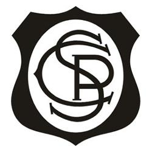
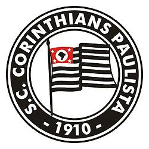

Escudos do Corinthians
-

-

-

- 
-

-

- 
-

1913 - 1914
Desde a fundação até 1913, o Timão não usava escudo nas camisas. O primeiro foi feito para a disputa na vaga da Liga Paulista e utilizava apenas as iniciais "C" e "P", de Corinthians Paulista.
A resposável por bordar o nosso primeiro escudo foi Antônia Perrone, esposa de Rafael Perrone, um dos fundadores do clube.
Permaneceu até 1914, nos dois jogos contra o Torino.
1914
O 2º escudo da história do Timão só foi encontrado em 2011, após ser descoberto por Celso Unzelte e David Costa. A divulgação do novo escudo ocorreu no dia 15 de julho de 2011.
A mesma foto prova que no início de vida, o Corinthians usava realmente camisa na cor bege.
1915
É acrescentado o "S". O "C" passa a valer para "Club" e "Corinthians".
1915
Pequena variação do escudo anterior, alterada apenas a moldura, criado pelo litógrafo Hermógenes Barbuy, irmão do jogador Amílcar Barbuy.
1916
Em 18 de outubro de 2019 foi divulgado este escudo perdido do Corinthians, descoberto pelo historiador responsável pelo Memorial do Corinthians, Fernando Wanner.
Projetado pelo litógrafo Hermógenes Barbuy, irmão do lendário jogador do Corinthians, Amílcar Barbuy, o escudo é desenhado com o C e o P entrelaçados em forma de escudo medieval. Bordado nas camisas do Corinthians em 1916, foi usado em cerca de seis amistosos que antecederam o campeonato da Liga Paulista de Football.
1916 - 1919
O escudo ganhou o formato redondo que seguiria com o time até os dias de hoje.
1919 - 1939
O distintivo já se aproxima das características atuais: um círculo negro, com a nome completo do clube e a data de fundação.
No centro, a bandeira paulista sem o rigor das 13 listras.
1939 - 1970
Surgem a âncora e os dois remos, através do pintor português do Parque São Jorge, Antônio Ferreira de Souza, conhecido como "Scafanhask". Para homenagear as glórias das regatas do clube, pintou os remos e a âncora ao redor do escudo redondo do Timão.
A arte-final foi realizada pelo pintor e artista plástico descendente de espanhóis Francisco Rebolo Gonsales, que anteriormente já tinha jogado no segundo quadro do Corinthians entre 1921 e 1927.
O escudo sofreu pequenas variações no decorrer dos anos.
1970 - 1979
No início da década de 1970, foi incluída a bóia e modificados os traços da âncora.
1980 - atual
Com o passar dos anos, o escudo foi se refinando. A bandeira central ganhou movimento bem como foi redesenhada para respeitar a bandeira oficial do Estado. A bóia, em volta do círculo, foi disfarçada e amarras foram colocadas para completar o escudo.
Essa "versão final" que conhecemos hoje, com os detalhes e reflexos nos remos e âncora, começou a aparecer no início dos anos 80.
História
- Fundação - 1910
- Às 20h30 do dia 1º de setembro, à luz de um lampião, na esquina das ruas José Paulino e Cônego Martins, no bairro do Bom Retiro, o grupo de operários formado por Anselmo Corrêa, Antônio Pereira, Carlos Silva, Joaquim Ambrósio e Raphael Perrone fundaram o Sport Club Corinthians Paulista. Com mais oito rapazes, foi formada a reunião dos primeiros integrantes e sócio-fundadores do Timão, que teve seu nome inspirado na equipe inglesa Corinthian-Casuals Football Club, que fazia excursão pelo Brasil. O presidente escolhido por eles foi o alfaiate Miguel Battaglia, que, já no primeiro momento, afirmou: “O Corinthians vai ser o time do povo e o povo é quem vai fazer o time”. Um terreno alugado na Rua José Paulino foi aplainado, virou campo e foi lá que, já no dia 14 de setembro, o primeiro treino foi realizado diante de uma plateia entusiasmada, que garantiu: “Este veio para ficar!”.
- Fora de casa - 1911
- Primeiro jogo do Timão fora da cidade de São Paulo. Na manhã de 17 de setembro, vitória sobre a Ponte Preta em Campinas por 1 a 0.
- Jogos na várzea - 1912
- Registro de jogos na várzea cujos resultados não foram encontrados. Os adversários foram Paulista, Concórdia, Botafogo, Minas Gerais, Maranhão e Vila Mariana.
- Estreia no Paulista - 1913
- Pela primeira vez, o Corinthians participou do campeonato da Liga Paulista de Futebol. O Alvinegro terminou em quarto lugar entre cinco equipes.
- O primeiro título - 1914
- Primeiro título do Sport Club Corinthians Paulista. Com 10 vitórias em 10 jogos disputados, o Timão marcou 37 gols e venceu a última partida por 3 a 0, contra o Lusitano, no Parque Antártica. O atacante Neco foi o artilheiro do torneio com 12 gols. O Alvinegro conquistou o Campeonato Paulista com uma rodada de antecedência. No dia 08 de novembro, a equipe derrotou o Campos Elyseos por 4 a 0 e sagrou-se campeã com a seguinte escalação: Aristides, Fúlvio e Casemiro González; Police, Bianco e César Nunes; Américo, Peres, Amílcar, Apparício e Neco.
- Ano discreto - 1915
- O Alvinegro deixou a Liga Paulista de Futebol por conta de uma vaga desejada no campeonato da Associação Paulista de Esportes Atléticos, onde jogavam os grandes times da época. Porém, ficou de fora das duas competições.
- Campeão - 1916
- De volta ao campeonato da Liga Paulista de Futebol, o Timão foi novamente campeão com 100% de aproveitamento: nove vitórias em nove jogos. Apparício foi o artilheiro do torneio com sete gols.